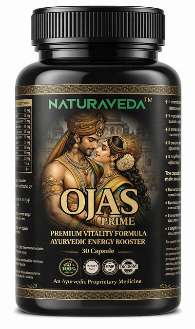

<section class="order__sction">
  <div class="container">
    <div class="order__section-wrapper">
      <div class="order__block mb-32">
        <a href="#order" class="info__order-btn mb-16"> 👉 50% छूट के साथ ऑर्डर करें - अपनी ऊर्जा वापस पाएं </a>
        <p class="text__supersmall semibold text__center">(पुरानी कीमत पर केवल 14 पैक बचे हैं)</p>
      </div>
      <div class="order__block-2 mb-32">
        <h3>बिस्तर में लीजेंड बनने का मौका न चूकें</h3>
        <p>स्वास्थ्य सहायता कार्यक्रम के हिस्से के रूप में, अब <span>50% छूट</span> है।</p>
        <p class="order__text-bg">
          ध्यान दें: पुरानी कीमत पर केवल 19 पैकेज बचे हैं. दवा के हिस्से के रूप में अश्वगंधा की इस किस्म का निर्यात
          सरकार द्वारा प्रतिबंधित है. अगला बैच केवल 6 महीने में होगा. स्टॉक रहने तक ऑर्डर करें!
        </p>
        <p>आपके क्षेत्र में तेज़ डिलीवरी उपलब्ध है (भारत).</p>
      </div>
      <h3 class="text__big bold mb-24">ओजस प्राइम कैसे प्राप्त करें?</h3>
      <div class="order__items mb-24">
        <div class="order__item order__item-1">
          <div class="order__item-icon">
            
          </div>
          <h3>1. नाम और फ़ोन नंबर दर्ज करें</h3>
          <p>ऑर्डर फॉर्म भरें</p>
        </div>
        <div class="order__item order__item-2">
          <div class="order__item-icon">
            
          </div>
          <h3>2. कॉल का इंतज़ार करें</h3>
          <p>एक विशेषज्ञ सवालों का जवाब देगा</p>
        </div>
        <div class="order__item order__item-3">
          <div class="order__item-icon">
            
          </div>
          <h3>3. प्राप्ति पर भुगतान</h3>
          <p>डिलवरी पर नकदी. कोई जोखिम नहीं</p>
        </div>
      </div>
      <div class="order mb-24" id="order">
        <form class="order__form">
          <h2 class="order__form-title">आर्डर फार्म</h2>
          <div class="order__form-wrapper">
            <div class="input__wrapper">
              <label for="name">
                
                <span>आपका नाम</span>
              </label>
              <input id="name" type="text" placeholder="अपना नाम दर्ज करें" required />
            </div>
            <div class="input__wrapper">
              <label for="phone">
                
                <span>फ़ोन नंबर</span>
              </label>
              <input id="phone" type="tel" placeholder="+91 XXXXXXXXX" required />
            </div>
          </div>
          <button type="submit" class="order__submit">परामर्श प्राप्त करें और छूट के साथ पुस्तक बुक करें</button>
          <p class="order__form-text">🔒 आपका डेटा सुरक्षित है और तीसरे पक्ष को हस्तांतरित नहीं किया जाता है</p>
        </form>
      </div>
      
      <div class="order__block-3 mb-32">
        <h3 class="mb-8 bold">निर्माता की ओर से महत्वपूर्ण सूचना</h3>
        <p class="mb-8 text-sm">
          OJAS PRIME की लोकप्रियता के कारण नकली उत्पादों का उदय हुआ है. आयुष प्रमाणन और परिणाम गारंटी वाला यह उत्पाद
          केवल इस वेबसाइट पर आधिकारिक ऑर्डर फॉर्म के माध्यम से बेचा जाता है।
        </p>
        <p class="text-sm bold">हमने भारतीय निवासियों के लिए कीमत कम रखने के लिए सभी बिचौलियों को हटा दिया है।</p>
      </div>
      <h3 class="text__big bold mb-24">निर्माता से अतिरिक्त जानकारी</h3>
      <div class="order__block-4 mb-32">
        <h4 class="text__medium bold blue mb-16">📋 ओजस प्राइम कोर्स की आवश्यकता किसे है?</h4>
        <p class="text__sm mb-48">
          स्वयं की जांच करो. यदि आप सूची में से कम से कम 2 वस्तुओं की जाँच करते हैं, तो आपका शरीर मदद के लिए चिल्ला रहा
          है:
        </p>
        <div class="order__block-item mb-12">
          
          <div>
            <p class="bold mb-8">नींद की समस्या:</p>
            <p class="">
              आप लंबे समय तक करवटें बदलते रहते हैं, अक्सर रात में जाग जाते हैं या सुबह सुस्ती महसूस करते हैं
            </p>
          </div>
        </div>
        <div class="order__block-item mb-12">
          
          <div>
            <p class="bold mb-8">दीर्घकालिक थकान:</p>
            <p class="">दोपहर के भोजन के समय ऊर्जा शून्य पर होती है, कॉफ़ी अब मदद नहीं करती है.</p>
          </div>
        </div>
        <div class="order__block-item mb-12">
          
          <div>
            <p class="bold mb-8">"नसें किनारे पर":</p>
            <p class="">
              छोटी-छोटी बातें आपको परेशान कर देती हैं, आप प्रियजनों पर गुस्सा निकालते हैं, आपको लगातार चिंता महसूस होती
              है या आपके गले में गांठ महसूस होती है।
            </p>
          </div>
        </div>
        <div class="order__block-item mb-12">
          
          <div>
            <p class="bold mb-8">कामेच्छा में कमी:</p>
            <p class="">आपके पास अंतरंग जीवन के लिए ताकत या इच्छा नहीं है (पुरुषों और महिलाओं के लिए प्रासंगिक).</p>
          </div>
        </div>
        <div class="order__block-item">
          
          <div>
            <p class="bold mb-8">ब्रेन फ़ॉग:</p>
            <p class="">ध्यान केंद्रित करने में कठिनाई, याददाश्त ख़राब हो गई है, काम करना मुश्किल हो गया है</p>
          </div>
        </div>
      </div>
      <div class="order__block-4 mb-32">
        <h4 class="text__medium bold blue mb-16">🕒 अश्वगंधा कैसे काम करता है: क्या उम्मीद करें?</h4>
        <p class="text__sm mb-16">
          यह समझना महत्वपूर्ण है: ओजस प्राइम 100% प्राकृतिक अर्क है, न कि कोई रासायनिक उत्तेजक।. यह "हथौड़े" की तरह काम
          नहीं करता (तुरंत, लेकिन ठंडेपन के साथ). यह एक "वास्तुकार" की तरह काम करता है, धीरे-धीरे ईंट दर ईंट आपके शरीर
          का पुनर्निर्माण करता है।
        </p>
        <p class="text__sm bold blue mb-48">
          📉 प्रभाव संचयी है. यदि आपको पहले दिन कोई बड़ा बदलाव महसूस न हो तो पाठ्यक्रम न छोड़ें!
        </p>
        <div class="order__block-item mb-48">
          
          <div>
            <p class="bold mb-8">1 सप्ताह:</p>
            <p class="">शरीर विथेनोलाइड्स से संतृप्त होने लगता है. तीव्र चिंता कम हो जाती है, आप शांत हो जाते हैं.</p>
          </div>
        </div>
        <div class="order__block-item mb-48">
          
          <div>
            <p class="bold mb-8">2-3 सप्ताह:</p>
            <p class="">
              नींद सामान्य हो जाती है. आपको कम समय में भरपूर नींद मिलने लगती है. सुबह के समय हल्कापन दिखाई देता है
            </p>
          </div>
        </div>
        <div class="order__block-item">
          
          <div>
            <p class="bold mb-8">4 सप्ताह:</p>
            <p class="">
              चरम दक्षता. कोर्टिसोल का स्तर सामान्य है. आप ऊर्जा का एक शक्तिशाली उछाल, मानसिक स्पष्टता और यौन क्रिया की
              बहाली महसूस करते हैं।
            </p>
          </div>
        </div>
      </div>
      <div class="order__block-5 mb-32">
        <h3 class="text__medium bold red mb-16">💊 निर्देश: अपनी रणनीति चुनें</h3>
        <p class="text__sm mb-48">
          अश्वगंधा एक स्मार्ट पौधा है. प्रशासन के समय के आधार पर, यह अलग-अलग प्रभाव देता है. चुनें कि आपको क्या चाहिए:
        </p>
        <div class="order__info order__info-1 mb-12">
          <p class="text__supersmall bold mb-8">🌙 रणनीति "तनाव-विरोधी और नींद" (अनुशंसित)</p>
          <p class="text__supersmall mb-8"><span class="bold">· कब:</span> सोने से 30-40 मिनट पहले 1 कैप्सूल लें</p>
          <p class="text__supersmall">
            <span class="bold">· क्यों:</span> विचारों के प्रवाह को रोकने के लिए, तंत्रिका तंत्र को आराम दें, जल्दी सो
            जाएं और पूरी रात गहरी नींद लें. उन लोगों के लिए आदर्श जो अनिद्रा से पीड़ित हैं।
          </p>
        </div>
        <div class="order__info order__info-2 mb-12">
          <p class="text__supersmall bold mb-8">☀️ रणनीति "ऊर्जा और उत्पादकता"</p>
          <p class="text__supersmall mb-8"><span class="bold">·कब:</span> सुबह नाश्ते के बाद 1 कैप्सूल लें</p>
          <p class="text__supersmall">
            <span class="bold">·क्यों:</span> स्वर, सहनशक्ति और एकाग्रता बढ़ाने के लिए. आप पूरे दिन शांत, लेकिन ऊर्जा से
            भरपूर रहेंगे. महत्वपूर्ण बैठकों या परीक्षाओं से पहले आदर्श.
          </p>
        </div>
        <div class="order__info order__info-3">
          <p class="text__sm">
            <span class="bold">💡 डॉक्टर की सलाह:</span> शरीर की अधिकतम रिकवरी के लिए, बिना ब्रेक के पूरा कोर्स (30 दिन)
            पीने की सलाह दी जाती है।
          </p>
        </div>
      </div>
    </div>
  </div>
</section>
